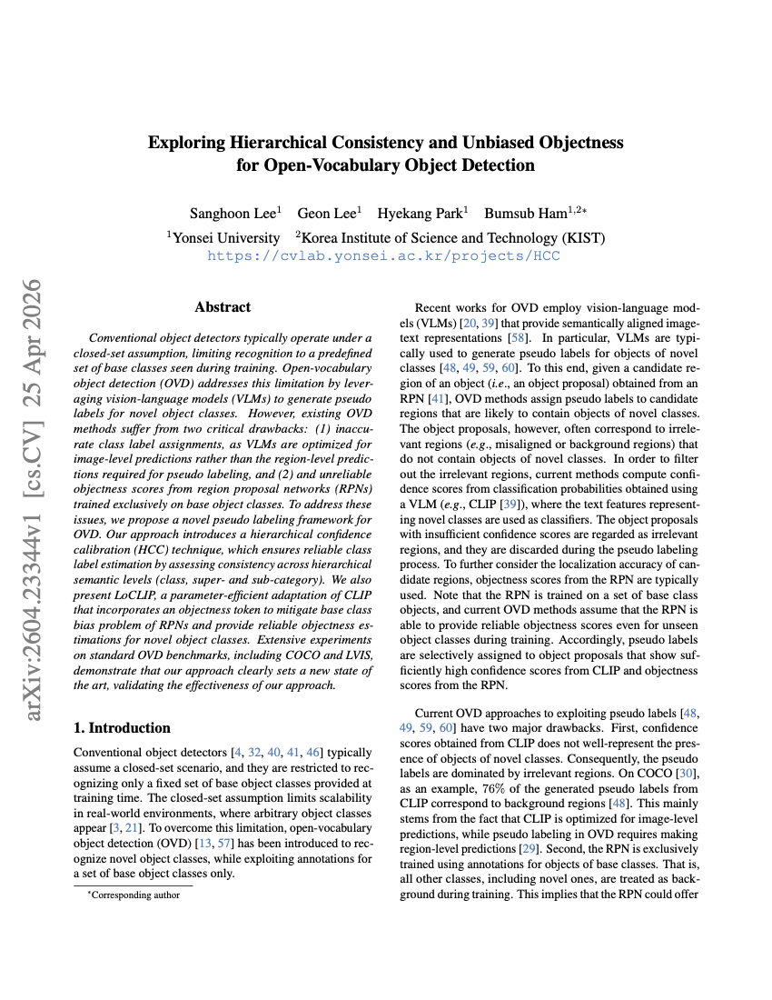
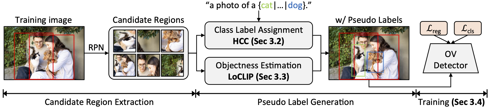
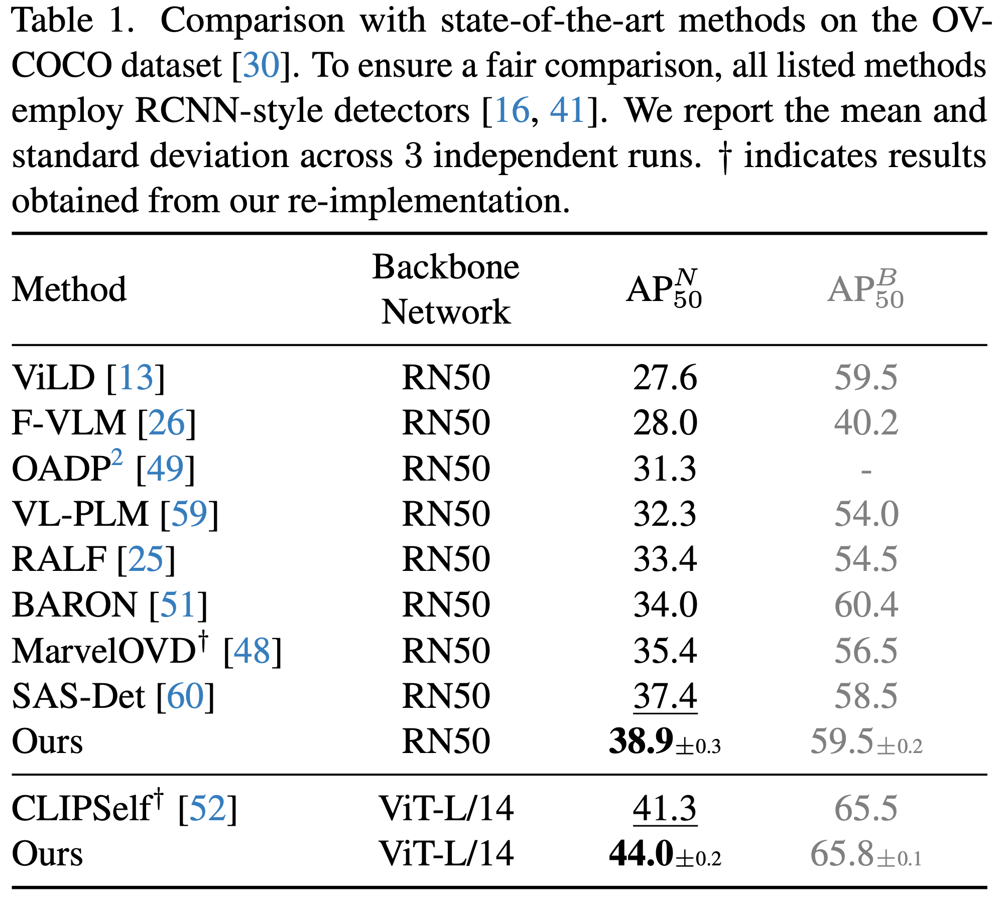
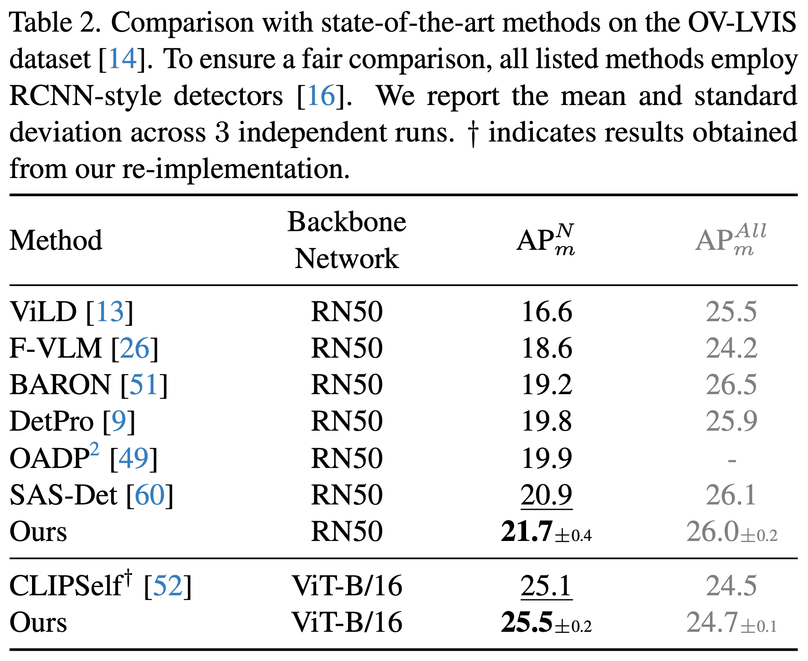

|
 |
S. Lee, G. Lee, H. Park, B. Ham Exploring Hierarchical Consistency and Unbiased Objectness for Open-Vocabulary Object Detection In Findings of IEEE/CVF Conference on Computer Vision and Pattern Recognition (CVPR), 2026 Paper / Code |
Conventional object detectors typically operate under a closed-set assumption, limiting recognition to a predefined set of base classes seen during training. Open-vocabulary object detection (OVD) addresses this limitation by leveraging vision-language models (VLMs) to generate pseudo-labels for novel object classes. However, existing OVD methods suffer from two critical drawbacks: (1) inaccurate class label assignments, as VLMs are optimized for image-level predictions rather than the region-level predictions required for pseudo-labeling, and (2) unreliable objectness scores from region proposal networks (RPNs) trained exclusively on base object classes. To address these issues, we propose a novel pseudo-labeling framework for OVD. Our approach introduces hierarchical confidence calibration (HCC), which enables reliable class label estimation by assessing consistency across hierarchical semantic levels, including class, supercategory, and subcategory. We also present LoCLIP, a parameter-efficient adaptation of CLIP that incorporates an objectness token to mitigate the base-class bias of RPNs and provide reliable objectness estimates for novel object classes. Extensive experiments on standard OVD benchmarks, including COCO and LVIS, demonstrate that our approach establishes a new state of the art, validating its effectiveness.

Overview. Overview of our framework for OVD, which mainly consists of three steps. First, a set of candidate regions is extracted from an image using an RPN. For each candidate region, we employ the HCC technique for selectively assigning a class label, while LoCLIP estimates an objectness score. Pseudo labels are assigned only to regions with hierarchically consistent predictions and sufficiently high objectness scores. These pseudo labels, together with ground-truth annotations for base object classes, are then used to train an OV detector with classification and regression losses. See our paper for more details.


This work was partly supported by IITP grant funded by the Korea government (MSIT) (No. RS-2022-00143524, Development of Fundamental Technology and Integrated Solution for Next-Generation Automatic Artificial Intelligence System and No. 2022-0-00124, RS-2022-II220124, Development of Artificial Intelligence Technology for Self-Improving Competency-Aware Learning Capabilities) and the KIST Institutional Program (Project No.2E33001-24-086).